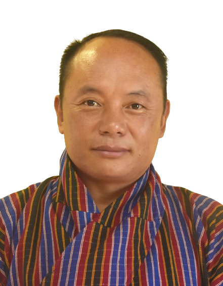
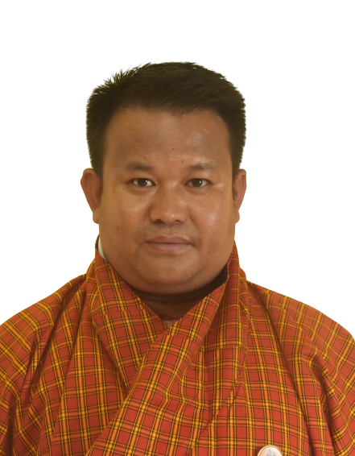

Dzongkha Programme
Yangdon Tshomo
Lecturer
MA in Buddhist Studies

Ngawang Tengay
Lecturer
MA in Buddhist Philosophy

Kelzang Namgay
Lecturer
MA in Buddhist Studies
Sonam Zangpo
Lecturer
MA in Dzongkha and Choekey